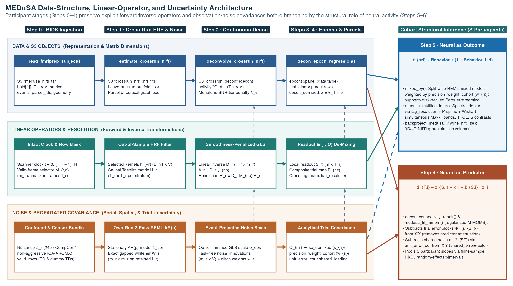
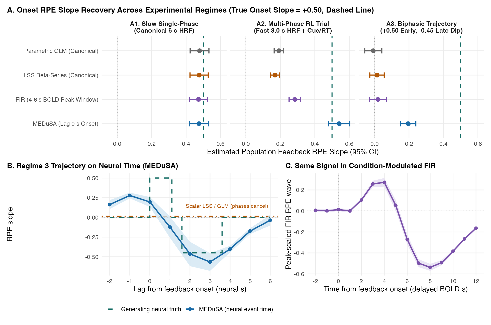

From neurovascular forward modeling to additive-error trial and connectivity inference
Many task-fMRI studies aim to relate fast, trial-specific cognitive processes—such as reward prediction errors, choice conflict, or deliberation effort—to neural dynamics across brain regions and participants. Because the hemodynamic response blurs neural activity across 15–30 seconds and scanner observations carry serial and spatial noise, trial-level neural responses are not observed directly. Instead, they are estimated from noisy, overlapping BOLD time series and then entered into second-stage models across trials and participants.
A central insight from two-step latent-variable and multilevel measurement-error modeling (Croon, 2002; Fuller, 1987; Skrondal & Laake, 2001; Vig & Hallquist, 2026) guides the design of MEDuSA: separating signal estimation from downstream structural inference works cleanly when the first stage places estimates on an unshrunk, additive-error scale and carries unit-specific error covariances into the second stage. The six subsections below develop how MEDuSA implements this principle from a single run’s forward model to population inference, method selection, and unified notation.
Substantive goal
Target quantity
MEDuSA stage & approach
Test trial modulation at a planned parcel and lag
Population within-person slope (Neural ~ Behavior)
Steps 1–4 de-mixed parcel panel \(\to\) Step 5 mixed_by() with participant random slopes and cohort precision weights
Separate firing rate from time-on-task during RT intervals
Sustained boxcar height ("rate") or area ("integral")
Step 3 duration-matched forward model (source_model = "duration")
Characterize how an effect evolves across peri-event time
Full lag trajectory, window contrast, or peak timing
Step 5 medusa_multilag_infer() using cross-lag resolution and covariance matrices
Estimate trial-level seed–target coupling or PPI
Disattenuated neural slope (Target ~ Seed * Task)
Step 6 decon_connectivity_repair() via measurement-error subtraction with conditioning protection (M-MOMS)

Figure 1.1: End-to-end MEDuSA data-structure, linear-operator, and uncertainty architecture across Steps 0–6. Within each participant (left to center), three parallel tracks advance together from clock-aligned BIDS/fMRIPrep inputs ("medusa_nifti_ts") through cross-run HRF and \(\text{AR}(p)\) noise estimation ("crossrun_hrf"), continuous prewhitened deconvolution ("crossrun_decon"), and de-mixed parcel epoch readout (epochs$panel): (1) Data & S3 Objects (blue), (2) Linear Operators & Resolution (\(M_{r,o} \to H_r \to D_r \to B_{r,\tau}\)), and (3) Noise & Propagated Covariance (\(Z_r \to \Sigma_{\text{cor}}, W_r \to \sigma_{\text{obs}}, \text{innovations} \to \Omega_{r,\tau}, s_{ri}, w_{ri}, \text{unit\_error\_cor}\)). At the cohort stage (right), inference branches according to the structural role of the deconvolved neural readout: Step 5 (teal, neural activity as outcome) enters decon_demixed with precision weights and cross-lag covariances into mixed_by() and medusa_multilag_infer(), whereas Step 6 (amber, neural activity as predictor) uses se_demixed and unit_error_cor inside decon_connectivity_repair() (M-MOMS) to subtract predictor error variance and shared regional noise.
Figure 1.1 provides a bird’s-eye map of how data objects, linear operators, and propagated noise covariances travel through the package—and why the pipeline branches at the end according to whether deconvolved neural activity serves as a regression outcome (Step 5) or a noisy predictor (Step 6). (For visual examples of what happens when an assumption along any of these tracks is violated, see the Visual QC and Troubleshooting Gallery.)
1. Express BOLD through a linear neurovascular forward model
Consider a single fMRI run and voxel (or parcel) observed at \(T\) acquisition times. Let \(a \in \mathbb{R}^T\) denote latent neural activity on the acquisition grid, \(H(h)\) denote time-invariant causal convolution with the local hemodynamic response function \(h\) (a Toeplitz matrix whose columns shift \(h\) forward volume by volume), \(Z\) collect low-frequency drift and nuisance terms, and \(\varepsilon\) denote zero-mean serial observation noise with covariance \(\Sigma\):
Figure 1.2: Two decision intervals of different length and two brief feedback events, with their predicted BOLD contributions. The bottom panel adds those contributions and a temporally correlated error draw.
As Figure 1.2 illustrates, each brief or sustained neural event influences BOLD across many subsequent volumes, so nearby events overlap substantially in the recorded signal. Step 1 (estimate_crossrun_hrf()) identifies \(h\) out of sample from the participant’s other runs and estimates \(\Sigma\) on task-adjusted residuals. Step 2 (deconvolve_crossrun_hrf()) then reconstructs continuous activity on the acquisition grid via smoothness-penalized generalized least squares:
With nuisance projection absorbed into the whitened solve, the deconvolved series is a known linear transformation of the BOLD vector, \(\widehat{a} = D y\). Larger values of \(\lambda\) suppress high-frequency noise while modestly broadening peaks; smaller values preserve rapid transitions at the cost of higher variance.
2. Write the exact trial-readout measurement model
To move from continuous activity \(\widehat{a}\) to event-locked trial quantities, suppose an investigator samples \(\widehat{a}\) around target events using a local time-averaging matrix \(S\) (symmetric kernel quadrature—for instance, a triangle window centered at feedback onset). If the true event-related neural amplitudes are \(\theta\) with forward BOLD design \(F\theta\) (\(y = F\theta + \varepsilon\) after nuisance removal), the raw trial readout \(\widehat{z}_{\text{raw}} = S\widehat{a} = SD y\) can be written by adding and subtracting \(\theta\):
where \(K_{\text{raw}} = SDF\) is the raw trial resolution matrix.
Notice the direct parallel to Empirical Bayes random-effect predictions in multilevel models (Vig & Hallquist, 2026): the estimation error \(\widehat{z}_{\text{raw}} - \theta\) contains two distinct components. The first, \(-(I - K_{\text{raw}})\theta\), is systematic regularization attenuation (\([K_{\text{raw}}]_{ii} < 1\)) and spillover from neighboring cues or trials (\([K_{\text{raw}}]_{ij} \neq 0\)), which depends on the signal itself. The second, \(SD\varepsilon\), is conditionally mean-zero observation noise propagated through deconvolution and readout.
3. Invert event mixing to recover an additive-error scale
If raw readouts were passed directly into trial regressions, regularization shrinkage would attenuate amplitudes while spillover from preceding cues or rapid neighboring trials could confound slopes. In Step 3 (decon_epoch_regression()), MEDuSA subtracts non-target spillover and applies a regularized inverse of the target mixing matrix (mirroring the inverse-shrinkage step in REPAIR) to form the composite epoch operator \(B\):
\[
\widehat{z} = B y \approx \theta + e,
\qquad \mathbb{E}(e \mid \theta) = 0,
\qquad \Omega = \operatorname{Cov}(e \mid B) = B \Sigma B^\top.
\]
Removing systematic mixing places decon_demixed (\(\widehat{z}\)) on a classical additive measurement-error scale: target amplitude plus zero-mean propagated error with known trial-by-trial covariance \(\Omega\) (whose diagonal square roots are se_demixed). When a small ridge term is retained in \(B\) to stabilize very rapid inter-stimulus intervals, Step 3 applies the matching post-demixing resolution map \(M_{\text{post}}\) to centered within-run covariates so both sides of a trial regression share identical coordinates. Step 4 then extends this exact operator across voxels within each anatomical parcel using task-free noise innovations to account for spatial error correlation.
4. Match downstream inference to the structural role of the neural variable
Once trial readouts \(\widehat{z}\) are expressed as latent signal plus additive error \(e\) with known variance \(s_i^2 = \Omega_{ii}\), how measurement error affects group inference depends on which side of the structural equation \(\widehat{z}\) occupies (Skrondal & Laake, 2001; Vig & Hallquist, 2026):
Neural activity as the outcome (Neural ~ Behavior, Step 5): When error-free task or behavioral variables predict decon_demixed, additive zero-mean error \(e_i\) enters the regression residual without biasing fixed-effect slope estimates. However, error precision varies across trials, runs, and participants. Step 5 (mixed_by() and medusa_multilag_infer()) pairs participant random slopes—treating participants as the independent unit of population replication—with composite inverse-variance weights \((\widehat{\tau}_{\text{eff}}^2 + s_i^2)^{-1}\) (precision_weight_cohort) and cross-lag covariance matrices so standard errors, simultaneous bands, and window contrasts remain calibrated.
Neural activity as a predictor (Target ~ Seed * Task or Behavior ~ Seed, Step 6): When a noisy parcel readout moves to the right-hand side as a predictor (\(\widehat{z}_{S,i} = \theta_{S,i} + u_i\) predicting \(\widehat{z}_{T,i} = \theta_{T,i} + v_i\)), trial error \(u_i\) inflates the predictor variance \(X^\top X\) (attenuating slopes toward zero) and any shared scanner or physiological noise \(\operatorname{Cov}(u_i, v_i) \neq 0\) between seed and target shifts \(X^\top Y\). Step 6 (decon_connectivity_repair()) subtracts per-trial predictor error covariance blocks \(\Psi_i\) and task-free cross-parcel noise covariances from the sample cross-products while guarding against unstable small denominators in low-reliability scans (Modified Method of Moments with Step-up Regularization, M-MOMS, medusa_fit_mmom()), before pooling participant slopes at the group level.
5. When does MEDuSA agree with—or outperform—GLM, FIR, and LSS beta-series?
Before committing to a full deconvolution pipeline, a practical question is when MEDuSA yields the same answer as simpler fMRI estimators—and when its extra machinery materially improves inference. To make that comparison concrete, assets/compare_glm_fir_lss_medusa.R evaluates four widely used methods on identical 16-participant, 3-run BOLD cohorts (\(\text{TR} = 1.0\text{ s}\), 6 voxels per parcel, shared + voxel-specific \(\text{AR}(1)\) noise, population feedback RPE slope \(\beta = 0.50\)):
Parametric Canonical GLM: Standard run-wise prewhitened general linear model convolving feedback and centered rpe (plus cue and decision boxcars when present) with a canonical \(6.0\text{ s}\) two-gamma HRF, followed by a group random-effects \(t\)-test.
LSS Single-Trial Beta-Series (Mumford et al., 2012): Separate prewhitened canonical-HRF GLM for every feedback trial (one column for the target trial, one column summing all other feedback trials, plus cue/decision regressors), followed by a multilevel model (beta_lss ~ rpe_within + (1 + rpe_within || id) + (1 | id:run)).
Condition-Modulated FIR: Prewhitened finite impulse response basis (\(-2\) to \(+14\text{ s}\)) for both the feedback main effect and rpe modulation, summarizing the peak-scaled canonical BOLD window (\(+4\) to \(+6\text{ s}\)) across participants alongside the full BOLD-time curve.
Figure 1.3 and Table 1.1 compare all four estimators across three progressively more demanding task regimes:
Regime 1 — Well-spaced single-phase events with a canonical HRF (7.5–10.5 s ITI): When isolated impulses evoke a canonical \(6.0\text{ s}\) hemodynamic response, all four estimators converge on nearly identical, well-calibrated group slopes (0.478 to 0.474). When classical GLM assumptions hold, MEDuSA introduces no bias or efficiency loss.
Regime 2 — Rapid multi-phase RL trials (Cue -> variable-RT Decision -> Feedback) in a fast-HRF region (3.0 s peak): Here expected value at cue correlates negatively with signed rpe at feedback, deliberation varies in reaction time, and the local vasculature peaks 3 seconds earlier than the canonical template (as often observed in striatum, thalamus, and insula). Canonical-HRF Parametric GLM (0.191) and LSS (0.169) suffer substantial vascular-mismatch attenuation and cue bleed, while a canonical \(4\text{--}6\text{ s}\) FIR peak window (0.284) partially misses the early hemodynamic peak. By learning the \(3.0\text{ s}\) HRF out of sample and de-mixing cue and variable-duration decision intervals, MEDuSA recovers the generating onset slope (0.542).
Regime 3 — Biphasic neural trajectory (+0.50 early phasic burst at 0–1.0 s, -0.45 late regulatory dip at 1.6–3.6 s): Single-scalar GLM (-0.007) and LSS (0.014) project the entire peri-event trajectory onto one basis function, integrating across opposing early and late lobes so the two phases largely cancel. Condition-modulated FIR (Figure 1.3, Panel C) captures the biphasic wave only in delayed, vascularly smeared BOLD time (\(+2\) to \(+12\text{ s}\)) without trial-level readouts. MEDuSA (Figure 1.3, Panel B) resolves both the early positive burst and the late negative dip directly on neural event time, with simultaneous Max-|T| bands and a late_minus_early window contrast (-0.316, \(\text{SE} = 0.033\)).

Figure 1.3: Head-to-head comparison of Parametric Canonical GLM, LSS Single-Trial Beta-Series (Mumford et al., 2012), Condition-Modulated FIR, and MEDuSA across 16-participant multi-run cohorts (assets/compare_glm_fir_lss_medusa.R). (A) Population onset RPE slope recovery (95% CI; dashed line = +0.50 truth) across three task regimes. (B) Regime 3 biphasic trajectory recovered by medusa_multilag_infer() on neural event time with simultaneous 95% Max-|T| bands vs. scalar LSS cancellation. (C) The same Regime 3 signal viewed through condition-modulated FIR in delayed BOLD time.
Throughout the pipeline, latent “activity” is measured in input BOLD units scaled by the chosen HRF normalization convention (normalize = "positive_lobe" under preset = "medusa"), and conditional error propagation treats the learned Step 1–4 operators as fixed while Step 5–6 random-effects models capture between-participant variation. Retaining the full S3 fit objects (hrf_fit, decon, and per-participant epochs lists or .rds/Parquet panels) preserves both the trial table and the operator covariances used by multi-lag and connectivity analyses.